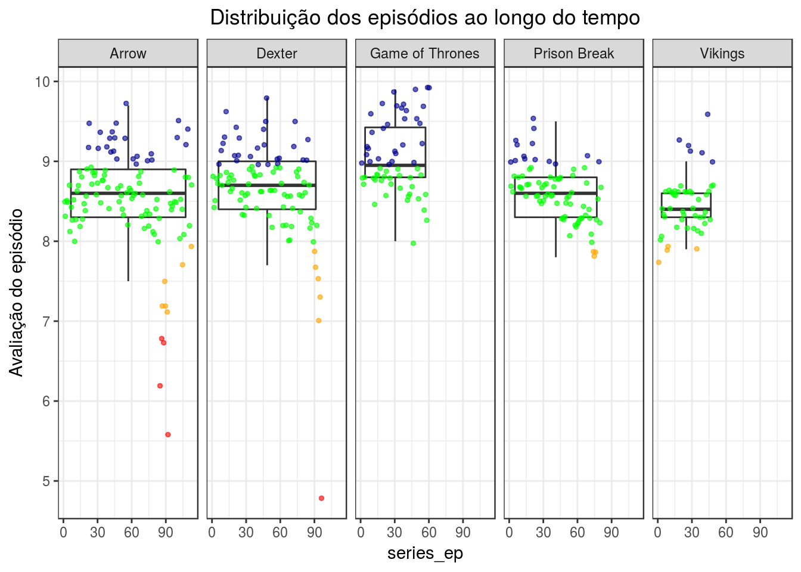

Ítalo Batista


Esta análise utiliza dados de séries extraídos do IMDB. Esses dados foram organizados pelo prof. Nazareno e podem ser encontrados neste repositório. Neste estudo estaremos interessados em discutir
library("tidyverse")dados = read_csv(file = here::here("data/series_from_imdb.csv"))Esses dados são referentes às avaliações que usuários deram a episódios das séries a que assistiram. Eles têm a seguinte estrutura:
VARIÁVEL EXPLICAÇÃO
series_name <chr> Nome da série.
series_ep <int> Número do episódio na série desde o primeiro.
season <int> Número da temporada, começando em 1.
season_ep <int> Número do episódio na temporada.
url <chr> Url do IMDB para o episódio (eg "http://www.imdb.com/title/tt5174246/")
Episode <chr> Título do episódio.
UserRating <dbl> Avaliação geral para o episódio.
UserVotes <dbl> Número de votos para o episódio.
r1 <dbl> Proporção de avaliações com nota 1 dadas por usuários.
r2 <dbl> Proporção de avaliações com nota 2 dadas por usuários.
...
r10 <dbl> Proporção de avaliações com nota 10 dadas por usuários.Basicamente, cada episódio terá nome, série, número de episódio na série, temporada, número de episódio na temporada, avaliação geral, proporções de avaliações e link para o IMDB.
Para esta análise, usaremos os dados das seguintes séries, escolhidas por terem tamanhos diferentes (tamanho pode ser número de temporadas ou número de episódios por temporada) e por gosto pessoal:
dados = dados %>%
filter(series_name %in% c("Arrow", "Dexter", "Game of Thrones", "Prison Break", "Vikings"))O número de votos por episódio decresce quanto mais longa for uma série?
Esta pergunta parte do pressuposto (de conhecimento de domínio comum, não-científico) de que quanto mais longa for uma série, maior a chance de uma pessoa não assisti-la com a mesma animação e, portanto, menor a motivação para avaliá-la. Além disso, dificilmente uma pessoa começa a assistir uma série a partir do meio. Esses pensamentos nos fazem acreditar que há um decrescimento significativo do número de avaliações por episódio quanto maior for o índice do episódio na série. Tendo como base essa hipótese, queremos investigar se o número de votos por episódio decresce significativamente ao longo do tempo.
Para responder a esta pergunta, daremos mais atenção à variável UserVotes, que guarda o número de votos que o episódio recebeu, e a variável season_ep, que indica o número do eísódio ao longo da série.
Vamos ver como se comportam essas duas varáveis (para as séries escolhidas), a fim de termos uma primeira visão sobre os dados e verificar a existência de valores extremos.
options(scipen=10000)
dados %>%
ggplot( aes(x = series_name, y = UserVotes, color = series_name)) +
geom_jitter(width = .4, height = .07, alpha = .6) +
geom_boxplot(alpha = .4, width = 0.95, outlier.color = "white", outlier.size = 0) +
theme(axis.title.x = element_blank(),
legend.position = "none",
plot.title = element_text(hjust = 0.5)) +
labs(title = 'Gráfico 1 - Distribuição dos valores para número de avaliações por episódio', y = 'Número de votos (UserVotes)')Um dos primeiros aspectos que chamam a atenção no gráfico acima é o fato da maioria das séries terem pontos muito concentrados. Isso só acontece porque uma quantidade considerável de episódios de GoT recebeu um número muito abundante de votos. A discrepância é grande entre os episódios da própria série. Qual teria sido o motivo? Quais episódios de GoT empolgaram tanto o público ao ponto de receberem tantos votos? Será que as esses episódios são as season finales? Ou a primeira temporada, ou a segunda? Ao longo desta análise poderemos analisar ainda esses aspectos.
Iremos plotar o mesmo gráfico, agora sem os dados de GoT, para que seja possível visualizar melhor as outras séries.
dados %>%
filter(series_name != "Game of Thrones") %>%
ggplot( aes(x = series_name, y = UserVotes, color = series_name)) +
geom_jitter(width = .4, height = .07, alpha = .6) +
geom_boxplot(alpha = .4, width = 0.95, outlier.color = "white", outlier.size = 0) +
theme(axis.title.x = element_blank(),
legend.position = "none",
plot.title = element_text(hjust = 0.5)) +
labs(title = 'Gráfico 2 - Distribuição dos valores para número de avaliações por episódio (sem GoT)', y = 'Número de votos (UserVotes)')Primeiro, vamos entender as informações estatísticas que um gráfico tipo boxplot pode nos dar. Para cada série, desenhamos um boxplot. Este tipo de gráfico utiliza-se do conceito de quartil para distribuir e desenhar os valores. Um quartil é qualquer um dos três valores do conjunto que divide os dados, se ordenados, em quatro partes iguais, em que cada parte representa 1/4 da amostra.
O primeiro quartil é o valor aos 25% da amostra ordenada. No gráfico, ele é identificado como a linha inferior da caixa.
O segundo quartil representa os valores até o qual se encontram 50% da amostra ordenada. No gráfico acima, as linhas horizontais dentro das caixas identificam o segundo quartil. Basicamente, o segundo quartil ou mediana é o valor central que divide os valores maiores dos menores. No nosso caso, agrupa 50% dos episódios que receberam mais votos acima e 50% abaixo.
O terceiro quartil ou quartil superior, representa valor a partir do qual se encontram 25% dos valores mais elevados.
Os valores desenhados para fora da extensão das linhas verticais perpendiculares às caixas são considerados valores extremos e que se dispersam em muito dos outros valores do conjunto.
Semelhante ao caso de GoT, em Arrow e Dexter há episódios cujo número de votos ultrapassa em muito a quantidade que os outros episódios receberam. Em Arrow, além disso, vemos que há uma grande concentração de pontos abaixo do quadrado, ou seja, há um alto número de episódios que foram menos avaliados que os outros. Em algum momento, mais cedo ou mais tarde na série, Arrow começa a ter poucos usuários que a avaliam. Qual seria a razão?
Prison Break e Vikings parecem ser menos dispersas, no sentido de que seus episódios são sempre avaliados por um número semelhante de usuários.
Vamos ver agora como se comporta o número de votos por episódio ao longo das séries, para identificar crescimento/decrescimento ou continuidade.
dados %>%
ggplot(aes(x = series_ep, y = log(UserVotes), color = series_name)) +
geom_jitter(width = 0.6, alpha = 0.6, size=1) +
geom_smooth(alpha=0.3) +
scale_y_continuous(expand=c(0,0)) +
facet_grid(series_name ~ .) +
theme_bw() +
theme(plot.title = element_text(hjust = 0.5), legend.position="none") +
labs(title = 'Gráfico 3 - Número de votos ao longo da série', x = 'Número do episódio (series_ep)', y = 'Log do número de votos (log de UserVotes)')Para este gráfico, decidimos usar log de UserVotes ao invés de UserVotes, pois os altos valores em GoT dificultam a visualização das linhas e pontos nas outras séries.
A partir do gráfico vemos que GoT tem o crescimento mais acentuado. Após o 50º episódio, os usuários começaram a fazer questão de avaliar a série. Em Dexter, também o número de votos por episódio pouco variou até certo momento. Nessa série, esse momento foi por volta do 75º episódio, quando mais usuários começaram a avaliar os episódios.
As outras três séries apresentam um decrescimento. Ou seja, a partir de algum momento menos usuários avaliaram a série. Em Arrow, que dentre as cinco é a de maior tamanho, o número de usuários que a avaliava se manteve até por volta do 60º episódio. A partir daí, o decrescimento da audiência é significativo. Vamos converter o valor dado em log no gráfico para a quantidade de número de votos utilizando a função inversa de log, a função exponencial. Então, em valores, Arrow começa e mantém um número de exp(8.1) ~> 3294 (aprox) avaliações por episódio. No fim da série, esse número cai para exp(7) ~> 1100 (aprox). É um decrescimento significativo.
Em Prison Break o caso é bastante semelhante. O decrescimento começa a partir do 30º episódio e quando chega no 60º, os próximos episódios recebem em média exp(7.1) ~> 1200. Por fim, Vikings tem um decrescimento mais tênue que Arrow e Prison Break.
Para entendermos como o tamanho da série influencia o número de usuários que a avaliam, podemos calcular a correlação entre as variáveis UserVotes e series_ep. A correlaçaõ é um índice que indica como duas variáveis variam juntas. A ideia aqui é entender se quanto mais distante o episódio for do início da série, menos votos ele recebe. Vamos ver a correlação entre UserVotes e series_ep para cada umas das séries.
dados.corr = dados %>%
group_by(series_name) %>%
summarise(correlacao = cor(UserVotes, series_ep, method = "pearson"))
dados.corr %>%
ggplot(aes(x = reorder(series_name, correlacao), y = correlacao, fill = series_name)) +
geom_bar(stat = "identity", alpha = .7, width = .75) +
theme_bw() +
theme(plot.title = element_text(hjust = 0.5)) +
theme(legend.position="none") +
theme(axis.title.y=element_blank()) +
labs(title = 'Gráfico 4 - Correlação entre UserVotes e series_ep por série',
y = 'Correlação entre o número do episódio na série e o número de avaliações que recebeu ') +
coord_flip() O índice de correlação varia entre -1 e 1. Quanto mais próximo de -1 ou 1, mais forte é essa relação. Se positiva, então as variáveis crescem juntas. Quando negativa, então elas são inversas. Ou seja, enquanto uma cresce, a outra decresce.
Como esperado, a partir do gŕafico anterior, Arrow e Prison Break têm correlações negativas e fortes. Ou seja, o número de avaliações por episódio foi caindo ao longo do tempo. Em Vikings, apesar de negativa, a correlação é fraca, então a intensidade com que o número de avaliações por episódio foi caindo ao longo do tempo pode não ser representativa. Em Dexter as variáveis praticamente não se correlacionam. Já em GoT, quanto maior o índice do episódio, mais votos ele recebeu. Ou seja, a temporada foi ficando cada vez mais popular.
Em geral, parece que os usuários tendem continuar avaliando a série a que assistem. Não há exatamente um padrão. Uma série pode ficar cada vez mais popular com o tempo, como GoT, ou se manter, como Dexter. Em algumas séries, elas ficam menos popular com o tempo, mas outros fatores podem estar influenciado.
Devemos admitir que é interessante o fato de termos duas séries (Dexter e GoT) que tiveram um crescimento no número de avaliações. Ou seja, usuários que não costumavam avaliar uma série fizeram questão de avaliar determinados episódios. Qual teria sido a motivação? Gostaram muito do episódio? Odiaram? Vamos investigar!
Quando os usuários votaram mais? Quando odiaram/amaram um episódio?
Primeiro vamos ver como as diferentes séries foram avaliadas ao longo de seus episódios. Para isso, vamos relacionar o episódio (series_ep), a partir do primeiro, à sua avaliação geral (UserRating).
dados$categoria = ifelse(dados$UserRating >= 9, "otimo",
ifelse(dados$UserRating >= 8, "bom",
ifelse(dados$UserRating >= 7, "medio", "ruim")))
dados %>%
ggplot(aes(x = series_ep, y = UserRating)) +
#stat_summary(fun.y=mean, geom="line", lwd=0.5, aes(group=10)) +
geom_smooth(methoed="loess") +
geom_point(alpha = 0.6, size = 1, aes(color=categoria)) +
scale_color_manual(name="Avaliação do episódio", values = c("otimo"="darkblue", "bom"="green", "medio"="orange", "ruim"="red"), labels=c("Bom", "Médio", "Ótimo", "Ruim")) +
facet_wrap(~ series_name, ncol = 2) +
theme_bw() +
theme(plot.title = element_text(hjust = 0.5)) +
theme(legend.position="right") +
labs(title = 'Gráfico 5 - Avaliações das séries ao longo do tempo', y = 'Avaliação do episódio (UserRating)', x = 'Número do episódio (series_ep)')Se lembrarmos do gráfico três, para as duas séries cujo número de avaliações foi caindo ao longo do tempo (Arrow e Prison Break), vemos que as notas dos episódios também não se mantiveram parecidas. Em Arrow, apenas um perído específico teve avaliações muito diferentes (e médias/ruins). Em Prison Break, mais perto do 70 º episódio, as notas caíram ligeiramente.
Outra fato interessante que podemos ver é que as duas séries que tiveram mais avaliações ao decorrer do tempo (GoT e Dexter) se comportam de maneiras distintas. Enquanto que em GoT o número de avaliações cresceu com o número da nota por episódio, em Dexter o número de avaliações cresceu cada vez que as pessoas gostavam menos dos episódios.
Outra boa abordagem é entender como se relacionam as variáveis UserVotes (o número de avaliações que um episódio recebeu) e UserRating (a avaliação geral dada para o episódio).
dados %>%
ggplot(aes(x = UserRating, y = log(UserVotes))) +
geom_smooth(method = "loess", color="yellow") +
geom_jitter(width = 0.2, alpha = 0.6, size = 1, aes(color = categoria)) +
scale_color_manual(name="Avaliação do episódio", values = c("otimo"="darkblue", "bom"="green", "medio"="orange", "ruim"="red"), labels=c("Bom", "Médio", "Ótimo", "Ruim")) +
facet_grid(series_name ~ .) +
theme_bw() +
theme(plot.title = element_text(hjust = 0.5), legend.position="bottom") +
labs(title = 'Gráfico 6 - Número de votos e avaliação', x = 'Avaliação do episódio (UserRating)', y = 'Log do número de votos (UserVotes)')Uma das coisas que podemos tirar desse gráfico é que episódios avaliados como médios ou bons (notas entre 7 e 9), pontos em laranja e verde, no geral receberam menos votos que os episódios melhor ou pior avaliados em cada série. Em GoT, os melhores episódios foram os que receberam mais votos!
Vamos ver melhor algumas séries, sem plotar os dados sobre GoT.
dados %>%
filter(series_name != "Game of Thrones") %>%
ggplot(aes(x = UserRating, y = UserVotes, color=categoria)) +
geom_smooth(method = "loess", color="yellow") +
geom_jitter(width = 0.2, alpha = 0.6, size = 2) +
scale_color_manual(name="Avaliação do episódio", values = c("otimo"="darkblue", "bom"="green", "medio"="orange", "ruim"="red"), labels=c("Bom", "Médio", "Ótimo", "Ruim")) +
facet_grid(series_name ~ .) +
theme_bw() +
theme(plot.title = element_text(hjust = 0.5), legend.position="right") +
labs(title = 'Gráfico 7 - Número de votos e avaliação', x = 'Avaliação do episódio', y = 'Número de votos')Como em GoT, os episódios melhor avaliados são aqueles que recebem mais votos. Também descobrimos que os avaliados com uma nota geral abaixo de seis recebem muitos votos também.
Nesse sentido, a partir da informações dos últimos três gráficos, verificamos que episódios avaliados com notas acima de 9 ou abaixo de 6 no geral recebem um número de votos muito maior que os outros episódios, o que pode significar que quando as pessoas gostam muito ou odeiam um episódio elas fazem questão de avaliar.
As season finales costumam ser melhor avaliadas que os outros episódios?
Nossa segunda pergunta norteadora parte da hipótese de que as season finales, por serem desfechos de um enredo e provavelmente terem mais carga emocional, geralmente conquistam mais usuários e portanto têm mais chances de serem melhor avalidas. Vamos analisar.
Para essa análise, vamos ver como se comportam as notas dos episódios na temporada ao londo das temporadas, a fim de verificar que episódio da temporada geralmente tem a nota máxima.
season_max = dados %>%
group_by(series_name, season) %>%
summarise(UserRating = max(UserRating))
season_max$max_season_rate = TRUE
dados.max.season.rate = left_join(dados, season_max, by = c("series_name", "season", "UserRating"))
dados.max.season.rate$max_season_rate = ifelse(is.na(dados.max.season.rate$max_season_rate), FALSE, TRUE)
dados.max.season.rate %>%
ggplot(aes(x=season_ep, y=UserRating, group=series_name)) +
geom_jitter(alpha=0.6, aes(color=max_season_rate)) +
scale_color_manual(name="Nota máxima na temporada:", values = c("FALSE"="darkblue", "TRUE"="red"), labels=c("Não", "Sim")) +
facet_grid(series_name ~ season) +
theme_bw() +
theme(plot.title = element_text(hjust = 0.5), legend.position = "bottom") +
labs(title = 'Gráfico 8 - Avaliação dos episódios ao longo das temporadas', y = 'Avaliação do episódio (UserRating)', x = 'Índice do episódio na temporada (season_ep) por temporadas (season)')Pelo gráfico, vemos que aparentemente não há um padrão. Em algumas séries, como GoT, a nota mais alta geralmente é de alguns dos últimos episódios da temporada. Em outras séries, como Dexter, nas últimas temporadas são os primeiros episódios que têm a nota máxima.
Como nosso objetivo é verificar se as season finales são as melhores avaliadas, vamos plotar o mesmo gráfico acima, agora dando destaque (ponto vermelho) apenas quando o episódio é o último da temporada e tem a nota máxima.
season_finales = dados %>%
group_by(series_name, season) %>%
summarise(season_ep = max(season_ep))
season_finales$is_season_finale = TRUE
dados.season.finales = left_join(dados.max.season.rate, season_finales, by = c("series_name", "season", "season_ep"))
dados.season.finales$is_season_finale = ifelse(is.na(dados.season.finales$is_season_finale), FALSE, TRUE)
dados.season.finales$max_rate_season_finale = ifelse(dados.season.finales$is_season_finale == TRUE &
dados.season.finales$max_season_rate == TRUE, TRUE, FALSE)
dados.season.finales %>%
ggplot(aes(x=season_ep, y=UserRating, group=series_name)) +
geom_jitter(alpha=0.6, aes(color=max_rate_season_finale)) +
scale_color_manual(name="Season finale e nota máxima na temporada:", values = c("FALSE"="darkblue", "TRUE"="red"), labels=c("Não", "Sim")) +
facet_grid(series_name ~ season) +
theme_bw() +
theme(plot.title = element_text(hjust = 0.5), legend.position = "bottom") +
labs(title = 'Gráfico 9 - Avaliação dos episódios ao longo das temporadas', y = 'Avaliação do episódio (UserRating)', x = 'Índice do episódio na temporada (season_ep) por temporadas (season)')Pelo gráfico, verificamos que dificilmente as season finales são os episódios melhor avaliados nas temporadas.
É curioso que que nem todas as season finales sejam as melhores avaliadas, visto que geralmente esses episódios são os de maior carga dramática. Isso não significa que os usuários não gostaram da season finale; significa apenas que há outro episódio na temporada de que gostaram mais. Então precisamos nos fazer outra pergunta para avaliar a aceitação dos usuários à season finale. Vamos verificar a proporção de haters (usuários que detestaram) e lovers (usuários muito satisfeitos) nas season finales. Será que no geral há mais haters ou mais lovers?
Há mais haters ou lovers de season finales?
Como apresentamos no início, cada episódio contém variáveis nomeadas r1, r2, r3, …, r10, em que cada uma corresponde a proporção de usuários que votaram naquela nota (ex: se r1 = 0.1, então 10% dos usuários votaram 1 em determinado episódio).
Vamos fazer a seguinte consideração:
Hater -> avaliou abaixo de 6 (r1, r2, r3, r4, r5)
Likers -> avaliou entre 6 e 8 (r6, r7, r8)
Lover -> avaliou acima ou igual 9 (r9, r10)Vamos ver agora como se distribuiu essa proporação nas season finales das temporadas.
dados.prop = dados.season.finales
dados.prop$haters = rowSums(dados.prop[,c('r1', 'r2', 'r3', 'r4', 'r5')], na.rm=TRUE)
dados.prop$lovers = rowSums(dados.prop[,c('r9', 'r10')], na.rm=TRUE)
dados.prop$likers = rowSums(dados.prop[,c('r6', 'r7', 'r8')], na.rm=TRUE)
dados.s.f.p = dados.prop %>%
filter(is_season_finale == TRUE) %>%
select(-url, -Episode, -max_season_rate, -max_rate_season_finale, -is_season_finale)
dados.s.f.p %>%
ggplot() +
geom_bar(stat = "identity", aes(x=1, y=haters, fill="Haters")) +
geom_bar(stat = "identity", aes(x=2, y=likers, fill="Likers")) +
geom_bar(stat = "identity", aes(x=3, y=lovers, fill="Lovers")) +
scale_fill_manual(name="Categoria de usuário:", values = c("Haters"="orange", "Likers"="darkgrey", "Lovers"="deeppink")) +
facet_grid(series_name ~ season) +
theme_bw() +
theme(plot.title = element_text(hjust = 0.5), legend.position = "bottom") +
theme(axis.title.x=element_blank(), axis.text.x=element_blank(), axis.ticks.x=element_blank()) +
labs(title = 'Gráfico 10 - Aceitação de usuários às season finales', y = 'Proporção por categoria de usuário')Pelo gráfico vemos que em geral a maioria dos usuários amam as season finales. Há alguns casos atípicos, como a última temporada de Dexter, em que a maioria do público odiou, ou as quartas temporadas de Arrow e de Prison Break, em que o público se dividiu entre gostar ou amar, e a primeira temporada de Vikings, em que menos pessoas amaram.
Gráfico extra! :)
dados %>%
ggplot(aes(group = series_name, x = series_ep, y = UserRating)) +
geom_boxplot(alpha = 0.6, outlier.colour = NA) +
geom_jitter(alpha = 0.6, size = 1, aes(color=categoria)) +
scale_color_manual(values = c("otimo"="darkblue", "bom"="green", "medio"="orange", "ruim"="red")) +
facet_grid(~series_name) +
theme_bw() +
theme(plot.title = element_text(hjust = 0.5), legend.position="none") +
labs(title = 'Distribuição dos episódios ao longo do tempo', y = 'Avaliação do episódio')